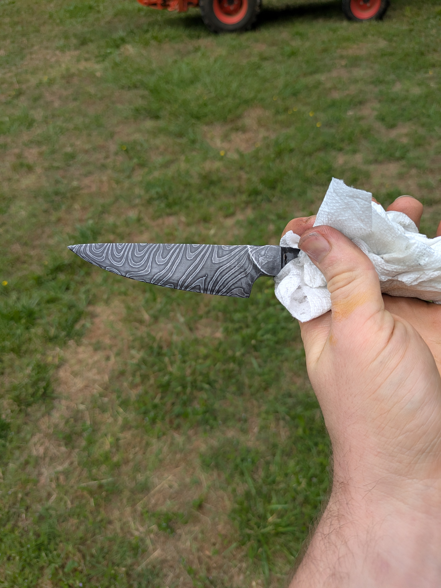
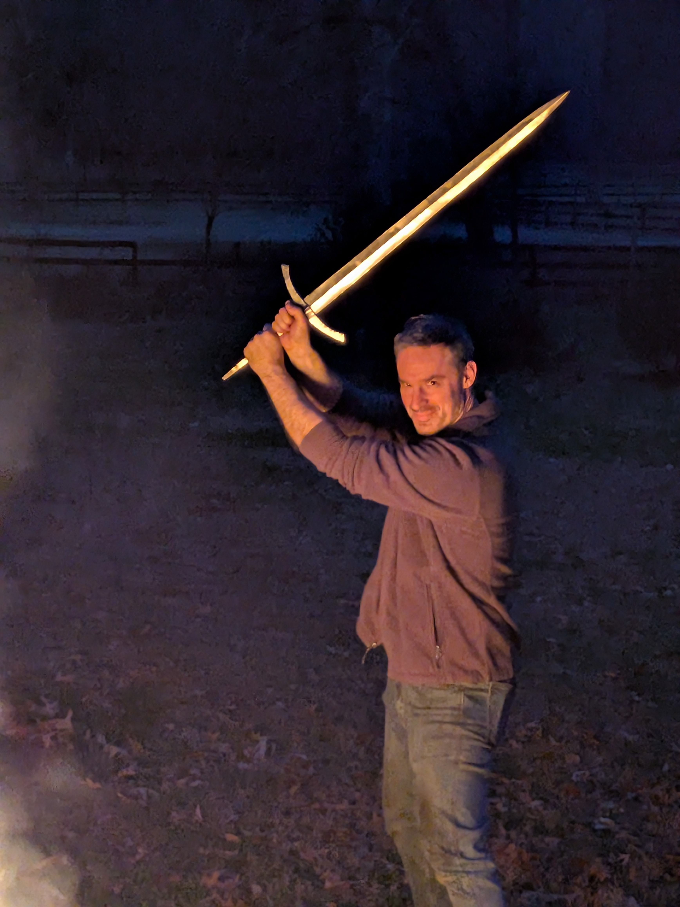
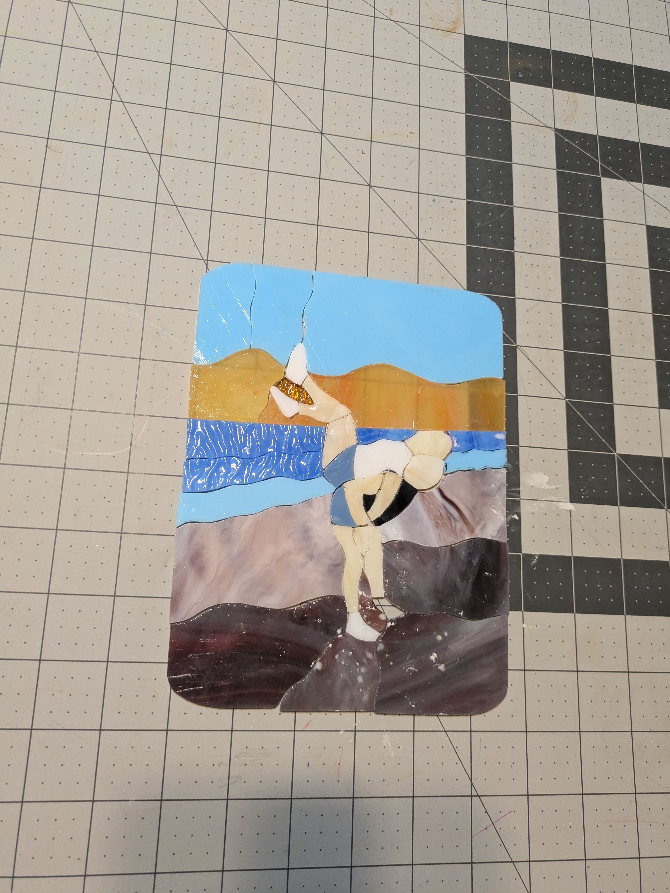
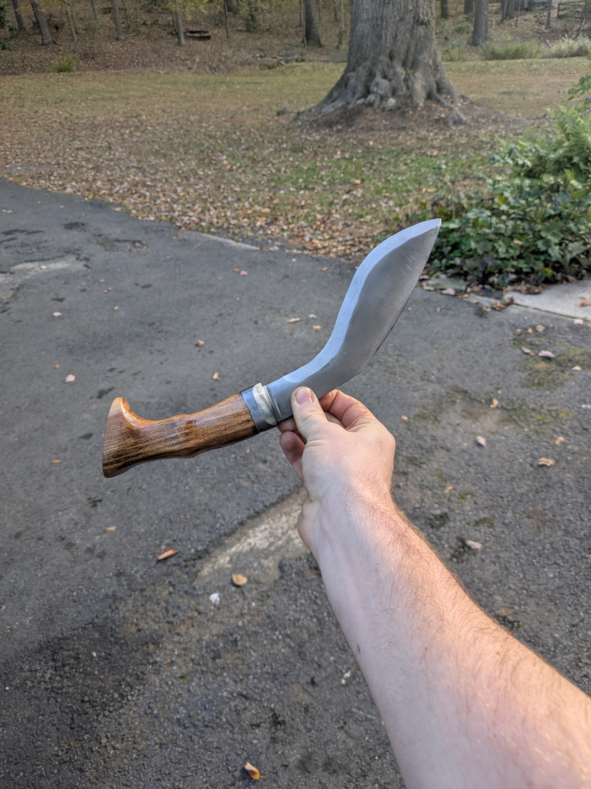
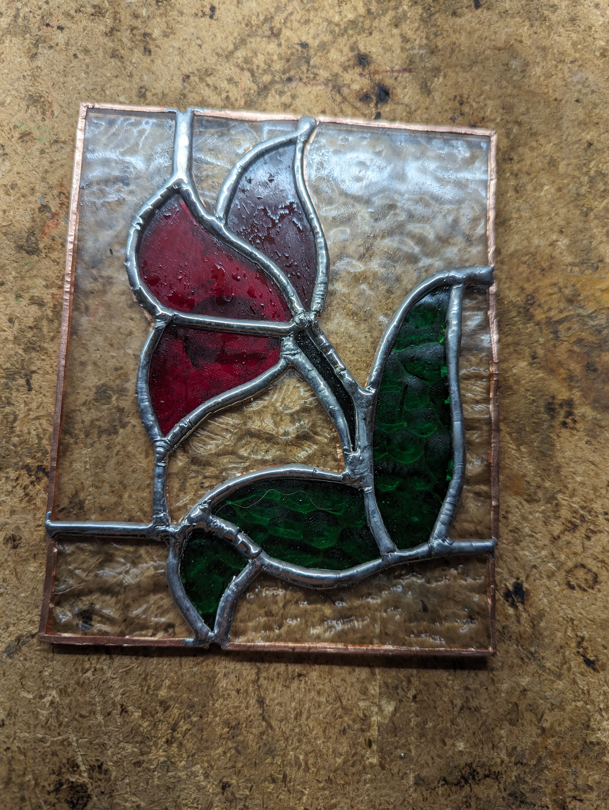

Damascus Steel
First Damascus Blade
Forge-welded layers of steel etched to reveal a flowing pattern — Isaiah's most recent and most intricate blademaking work.

Swordsmithing
The Long Sword
A hand-forged long sword with curved crossguard — revealed by firelight at a backyard gathering, January 2026.

Stained Glass
Sisters at the Beach
A figurative scene in stained glass — two sisters at the shore, rendered in hand-cut coloured glass.

Knifemaking
The Kukri
A curved kukri-style blade with a wood handle — forged and ground in the backyard forge, fall 2025.

Stained Glass
First Completed Panel
The piece that started it all — a lead-came flower panel, cut and soldered by hand in early 2024.

Wood Carving
Jewelry Tree
A delicate branching tree carved from a single block, stained and finished as a jewelry display stand.